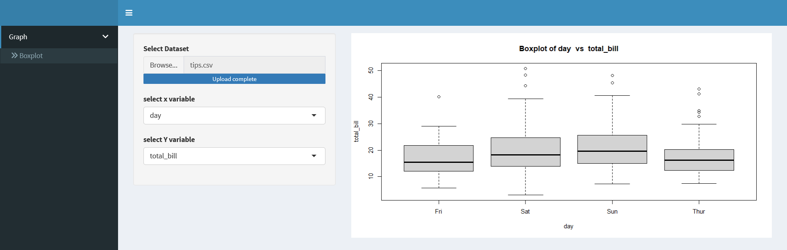

library(shiny)
library(shinydashboard)
library(tools) #to check file extension
library(dplyr) #select_if()
library(readxl)
boxplot_ui=fluidPage(
title="boxplot",
sidebarLayout(
sidebarPanel(
fileInput(inputId = "file_boxplot", label = "Select Dataset",
accept = c("text/csv","text/comma-separated-values,text/plain",
".csv",".xlsx"),
buttonLabel = "Browse...",
placeholder = "No file selected"),
selectInput(inputId = "boxplot_var1_id",
label = "Select y variable",
choices=""),
selectInput(inputId = "boxplot_var2_id",
label = "Select x variable",
choices="")
),
mainPanel (plotOutput("boxplot"))
))
header = dashboardHeader()
sidebar=dashboardSidebar(
sidebarMenu(
id = "tabs",
menuItem("Graph", tabName = "graph",
menuSubItem("Boxplot", tabName = "boxplot")
)
)
)
body=dashboardBody(
tabItems(
tabItem("boxplot",boxplot_ui)
)
)
ui = dashboardPage(
title = "Web App With Shiny",
header,
sidebar,
body
)
update_input= function(input_id,label,data){
return(
updateSelectInput(
session = getDefaultReactiveDomain(),
inputId = input_id,
label = label,
choices = names(data()),
selected = NULL
) )
}
server= function(input,output){
data_boxplot= reactive({
req(input$file_boxplot)
file_ext= file_ext(input$file_boxplot$datapath)
if(file_ext=="xlsx"|file_ext=="xls"){
df=as.data.frame(read_excel(input$file_boxplot$datapath))
}
else{
df = read.csv(input$file_boxplot$datapath )
}
return(df)
})
data_boxplot_numeric=reactive(select_if(data_boxplot(), is.numeric))
data_boxplot_categorical=reactive(select_if(data_boxplot(), is.character))
observe(update_input("boxplot_var1_id",label="select x variable",
data_boxplot_categorical))
observe(update_input("boxplot_var2_id",label="select Y variable",
data_boxplot_numeric))
output$boxplot = renderPlot({
x = data_boxplot()[,input$boxplot_var1_id]
y=data_boxplot()[,input$boxplot_var2_id]
boxplot(y~x,xlab=input$boxplot_var1_id,ylab=input$boxplot_var2_id,
main = paste("Boxplot of" ,input$boxplot_var1_id," vs ",input$boxplot_var2_id))
})
}
shinyApp(ui,server)
